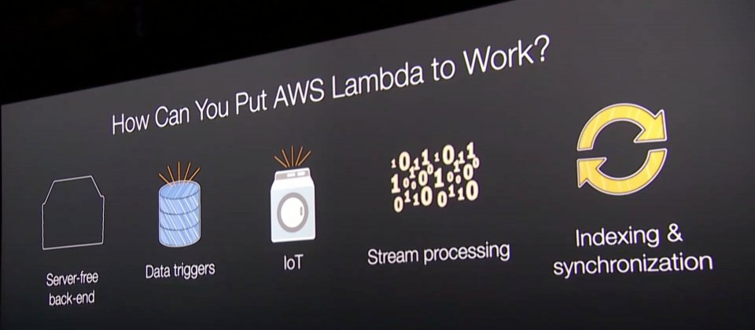
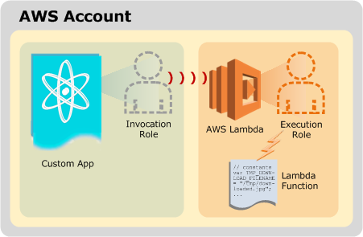
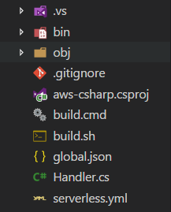
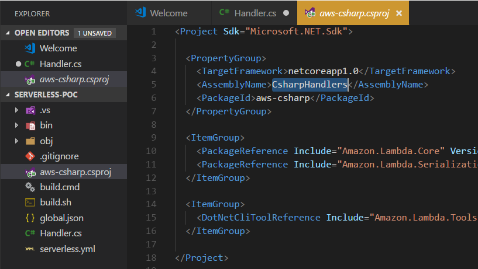
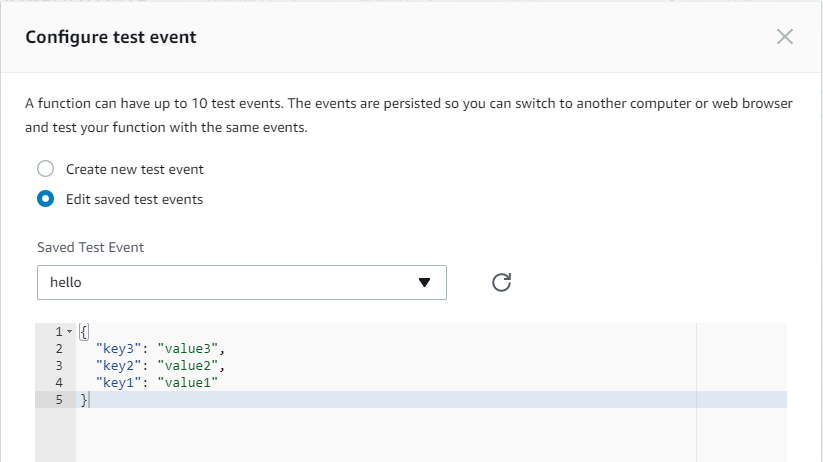
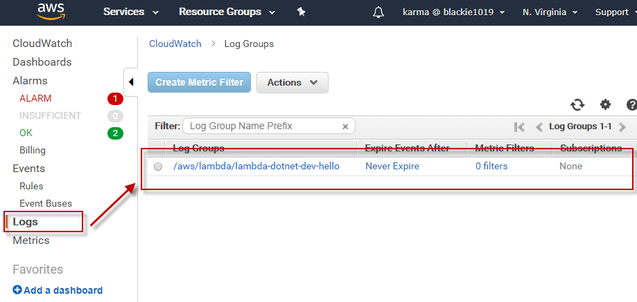
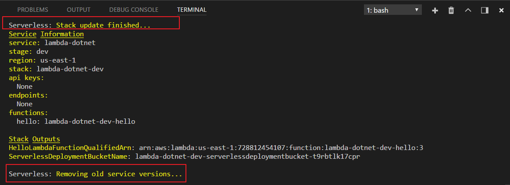
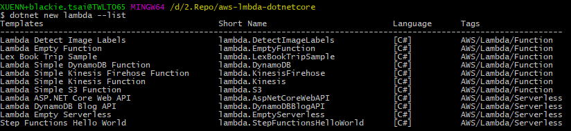

30天鐵人賽介紹 AWS 雲端世界 - 19: 改變雲端架構的核心計算服務 Lambda
What is Lambda
AWS Lambda 是一種無伺服器運算服務(Serverless)，可設定觸發條件後執行特定的程式碼作為事件的回應，並自動透過該服務管理基礎設備(Infrastructure)的運算資源，不必考慮伺服器的類型或選項，只需思考需要使用的多少運算時間來作為費用成本。

簡單來講 Lambda 就像是把服務外包出去，開發人員能花更多的精力專注在開發的本質上(只需撰寫程式碼)，而與昨天介紹的 beanstalk 最大的差別在於 Lambda 定義事件觸發條件，此後程式便會在條件滿足時自動運作，如果沒有遇到觸發條件則不運作，因此可以省下更多的經費。
而 Lambda 應用的情境非常廣泛，這邊附上官方給的三個範例:

收費方式主要可以考量三點:
- 所需 Memory 與程式執行時間
- 呼叫次數
- 資料傳輸量
不過 Lambda 有提供免費方案，包含每月 100 萬個免費請求以及每月 400,000 GB-秒的運算時間；這個400,000 GB-秒的部份，會根據我們選擇的記憶體（Memory）而有不同的免費秒數。
Lambda是被動式的呼叫，預設它並不支援外部網址；Lambda只支援透過其他 AWS 服務本來觸發呼叫。另外開發上，不支援Debug下中斷點，所以我們需要透過Log的方式來進行Debug，而且 Lambda 在執行的環境是唯讀的，所以無法透過Disk I/O的方式寫入任何檔案至Lambda上，如果有寫入檔案的需求則需要串接至 S3 服務上面。
目前支援的開發語言與架構:
- Node.js (JavaScript)
- Python
- Java (與 Java 8 相容)
- C# (.NET Core, 2.0 快要有 support 了…Support to .NET Core 2.0)
詳細支援內容可以參考Lambda Execution Environment and Available Libraries，不過目前這邊的更新有點慢…
Hands on Lab
這邊我們將以 .NET Core 搭配 Serverless Framework 示範，撰寫第一個 Lambda，將 Lambda 觸發時寫一個紀錄至 CloudWatch 中存放。
先登入 AWS Console
然後在中間的輸入框查詢 EC2 ，或是透過左上角的 Services 點選到 Compute 下的 Lambda 服務。
這邊只是看一下服務內容，接下來的操作我們將使用 CLI + Serverless 這個 CLI tool 幫我們完成
Setup up serverless framework and create project
首先讓我們快速透過 npm 安裝 Serverless:
npm install serverless -g
這邊你要用 serverless 或是 sls 當作指令都可以
serverless -v
sls -v
而當我們將 CLI 安裝好就可以透過樣板產生專案檔了，再產生前我們可以先查看一下當前有的樣板:
serverless create --help
接著我們可以透過以下指令產生一個新的專案:
sls create -t aws-csharp --name lambda-dotnet
這邊可以看到專案產生的結構如下:

而其中一個主要處理的程式內容如下:
handler.cs
1 | using Amazon.Lambda.Core; |
如果在不喜歡打開來看到一推相依套件沒載入的警告，可以先在專案目錄下將套件先行還原:
dotnet restore
而另外一個需要重點介紹的就是 serverless.yaml ，這邊包含環境的設定，其中 Lambda function-handler 的註冊組合規則為 : {DLL Name}::{Class namespace}:{Method name} 的結構:
serverless.yaml
1 | # Welcome to Serverless! |
所以這邊我們可以看到專案檔(.csproj) 該專案輸出的 dll 名稱為 CsharpHandler:

而這邊可以稍微提及一下 global. json 裡面包含了當前使用的 SDK (.NET Core)版本，目前官方支援的還是 1.0.4/1.1.0 版。
接著設定 serverless 的環境設定將我們可以直接將程式碼部屬上 AWS :
serverless config credentials --provider aws --key <Your Key> --secret <Your Secret>
完成後可從畫面看到設定成功，代表我們成功註冊至 serverless 的環境中就可以接下來部屬我們的 .NET Core 至 Lambda環境
Build and deploy our .NET Core Lambda
由於先前已經有執行過還原指令，我們就可以直接透過以下指令幫我們建立部屬的壓縮檔案:
dotnet lambda package --configuration release --framework netcoreapp1.0 --output-package bin/release/netcoreapp1.0/deploy-package.zip
或是我們也可以透過以兩下個指令檔幫我們執行:
bash 環境:
sh build.sh
Windows:
build.cmd
最後我們只要透過下面指令執行部屬就可以了:
sls deploy -v
當部屬完成後我們即可透過 serverless 提供的指令 invoke 進行測試
serverless invoke -f hello -d '{"key3": "value3","key2": "value2","key1": "value1"}'

關於 invoke 指令可以參考 Serverless CLI Reference - AWS - Invoke
而我們由 AWS Console 進入 Lambda 服務即可看到當前 Lambda 的架構:
可選擇直接建立測試 Event 並手動執行:

這邊如果帶入的參數或是呼叫的函式名稱錯誤會顯示錯誤內容:
CloudWatch Result
這邊我們來看一下 CloudWatch 上的結果:


這邊可以看到兩次分別由不同方式觸發的紀錄
Update and Deploy
這邊如果我們需要修改程式，則必須在程式修改完後再次執行剛剛打包壓縮 zip 檔案的指令重新產生一次壓縮檔:
dotnet lambda package --configuration release --framework netcoreapp1.0 --output-package bin/release/netcoreapp1.0/deploy-package.zip
而當壓縮檔案更新好後我們就可以透過原先的部屬指令進行發佈，這邊會自動幫我們判斷有無差異，如果有才進行更新:

每次的更新則會讓 Lambda 有一組版本號，所以我們對應的 CloudWatch 也會有不同的清單出來:
More .NET Core implement
首先可以參考筆者先前的部落格內容.NET Core 專區或是 John 大的 ASP.NET Core 從入門到實用 完成 .NET Core 的環境設置，並安裝aws-extensions-for-dotnet-cli。這個 CLI 整合了原先 .NET Core 的 CLI ，可以更快速的發佈應用程式到 AWS 上。
而我們也可以參考 aws-lambda-dotnet，只要在我們的新增下面這個套件的相依
dotnet new -i Amazon.Lambda.Templates::*
我們就可透過以下指令列出當前可用的樣板
dotnet new lambda --list

或是用 Visual Stuido 2017 + AWS Toolkit for Visual Studio 2017。
由於開發目前還限制在 .NET Core 1.0 的版本，如果對於 VSCode 與 .NET Core CLI 不熟悉的朋友建議採 VS2017 + AWS Toolkit for Visual Studio 2017方式會較為方便。
這邊會需要設定一個 aws-lambda-tools-defaults.json 的檔案來指定到時發佈時的相關設定，所以發佈時如果要更改 Region 或是一些服務的權限設定也可以重這邊設定。